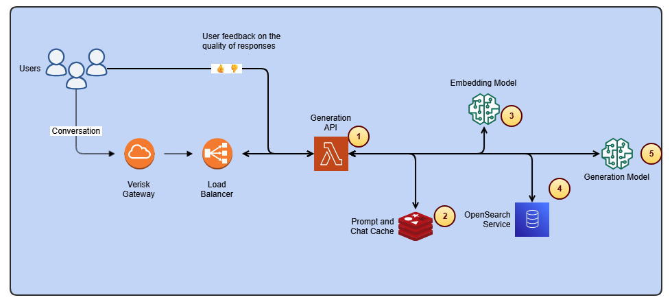
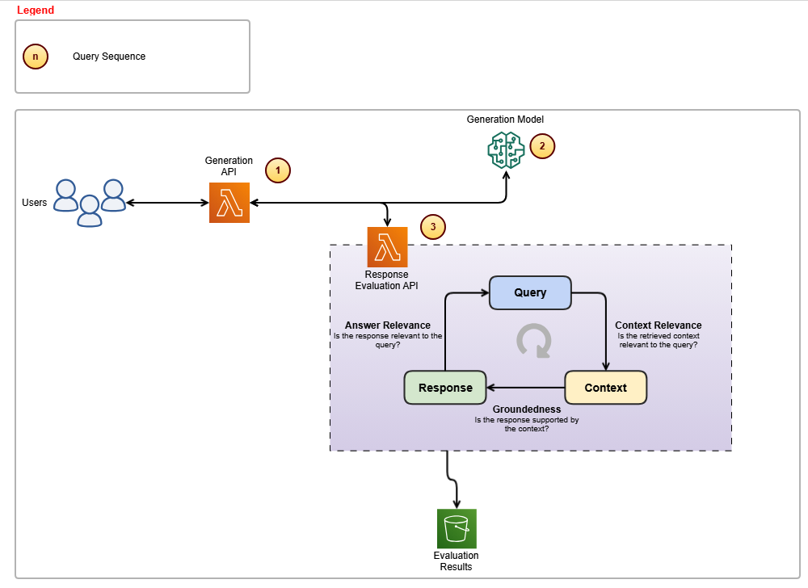

Tối ưu hóa việc truy cập thay đổi nội dung xếp hạng ISO với Verisk Rating Insights và Amazon Bedrock
Bởi Samit Verma, Eusha Rizvi, Manmeet Singh, Troy Smith, Corey Finley, Arun Pradeep Selvaraj, và Ryan Doty – đăng ngày 16 tháng 9 năm 2025| Chủ đề: Amazon Bedrock, Amazon ElastiCache, Amazon OpenSearch Service, Artificial Intelligence, Customer Solutions, Generative AI
Bài viết này được đồng tác giả bởi Samit Verma, Eusha Rizvi, Manmeet Singh, Troy Smith, và Corey Finley từ Verisk.
Verisk Rating Insights, là một tính năng thuộc ISO Electronic Rating Content (ERC) — một công cụ mạnh mẽ được thiết kế để cung cấp tóm tắt về các thay đổi trong ISO Rating giữa hai phiên bản phát hành.
Trước đây, việc trích xuất thông tin cụ thể từ hồ sơ hoặc xác định sự khác biệt giữa nhiều phiên bản đòi hỏi người dùng phải tải xuống thủ công toàn bộ gói dữ liệu, một quy trình mất thời gian và dễ xảy ra sai sót.
Thách thức này, kết hợp với nhu cầu về độ chính xác cao và hỗ trợ khách hàng kịp thời, đã thúc đẩy Verisk tìm kiếm các phương pháp đổi mới nhằm nâng cao khả năng truy cập và tự động hóa các quy trình lặp lại.
Bằng việc sử dụng trí tuệ nhân tạo sinh (Generative AI) và các dịch vụ từ Amazon Web Services (AWS), Verisk đã đạt được những bước tiến đáng kể trong việc xây dựng giao diện hội thoại thông minh, giúp người dùng truy xuất thông tin nhanh chóng, xác định khác biệt nội dung, và nâng cao hiệu suất vận hành tổng thể.
Trong bài viết này, chúng ta sẽ tìm hiểu cách Verisk Rating Insights, được hỗ trợ bởi Amazon Bedrock, mô hình ngôn ngữ lớn (LLM), và Retrieval Augmented Generation (RAG), đang thay đổi cách khách hàng tương tác và truy cập các thay đổi trong nội dung ISO ERC.
Thách thức
Rating Insights cung cấp nội dung có giá trị, nhưng có những thách thức đáng kể về khả năng tiếp cận của người dùng và thời gian cần thiết để trích xuất thông tin chi tiết có thể hành động:
- Tải xuống thủ công – Khách hàng phải tải xuống toàn bộ gói để có được một phần nhỏ thông tin liên quan. Điều này không hiệu quả, đặc biệt khi chỉ cần xem xét một phần của hồ sơ.
- Truy xuất dữ liệu không hiệu quả – Người dùng không thể nhanh chóng xác định sự khác biệt giữa hai gói nội dung mà không cần tải xuống và so sánh thủ công, có thể mất hàng giờ và đôi khi là nhiều ngày phân tích.
- Hỗ trợ khách hàng tốn thời gian – Nhóm hỗ trợ khách hàng ERC của Verisk đã dành 15% thời gian hàng tuần để giải quyết các truy vấn từ những khách hàng bị ảnh hưởng bởi những sự thiếu hiệu quả này. Hơn nữa, việc giới thiệu khách hàng mới yêu cầu nửa ngày đào tạo lặp đi lặp lại để đảm bảo họ hiểu cách truy cập và diễn giải dữ liệu.
- Thời gian phân tích thủ công – Khách hàng thường dành 3–4 giờ cho mỗi trường hợp thử nghiệm để phân tích sự khác biệt giữa các hồ sơ. Với nhiều trường hợp thử nghiệm cần giải quyết, điều này dẫn đến sự chậm trễ đáng kể trong việc ra quyết định quan trọng.
Tổng quan giải pháp
Để giải quyết những thách thức này, Verisk đã bắt tay vào hành trình nâng cao Rating Insights bằng các công nghệ AI tạo sinh. Bằng cách tích hợp Anthropic’s Claude, có sẵn trong Amazon Bedrock và Amazon OpenSearch Service, Verisk đã tạo ra một nền tảng hội thoại tinh vi nơi người dùng có thể dễ dàng truy cập và phân tích các thay đổi nội dung xếp hạng.
Sơ đồ sau minh họa kiến trúc cấp cao của giải pháp, với các phần riêng biệt hiển thị quy trình nhập dữ liệu và vòng lặp suy luận. Kiến trúc sử dụng nhiều dịch vụ AWS để thêm khả năng AI tạo sinh vào hệ thống Ratings Insight. Các thành phần của hệ thống này hoạt động cùng nhau một cách liền mạch, điều phối nhiều lệnh gọi LLM để tạo phản hồi cho người dùng.

Sơ đồ sau cho thấy các thành phần kiến trúc và các bước cấp cao liên quan đến quy trình nhập dữ liệu.
 Các bước trong quy trình nhập dữ liệu diễn ra như sau:
Các bước trong quy trình nhập dữ liệu diễn ra như sau:
- Quá trình này được kích hoạt khi một tệp mới được thả vào. Nó chịu trách nhiệm phân đoạn tài liệu bằng cách sử dụng chiến lược phân đoạn tùy chỉnh. Chiến lược này kiểm tra đệ quy từng phần và giữ chúng nguyên vẹn mà không chồng chéo. Sau đó, quá trình nhúng các đoạn và lưu trữ chúng trong OpenSearch Service dưới dạng nhúng vectơ.
- Mô hình nhúng được sử dụng trong Amazon Bedrock là amazon titan-embed-g1-text-02.
- Amazon OpenSearch Serverless được sử dụng làm kho lưu trữ nhúng vectơ với khả năng lọc siêu dữ liệu.
Sơ đồ sau cho thấy các thành phần kiến trúc và các bước cấp cao liên quan đến vòng lặp suy luận để tạo phản hồi cho người dùng.

Các bước trong vòng lặp suy luận diễn ra như sau:
- Thành phần này chịu trách nhiệm thực hiện nhiều tác vụ: nó bổ sung các câu hỏi của người dùng bằng lịch sử trò chuyện gần đây, nhúng các câu hỏi, truy xuất các đoạn liên quan từ cơ sở dữ liệu vectơ và cuối cùng gọi mô hình tạo sinh để tổng hợp phản hồi.
- Amazon ElastiCache được sử dụng để lưu trữ lịch sử trò chuyện gần đây.
- Mô hình nhúng được sử dụng trong Amazon Bedrock là amazon titan-embed-g1-text-02.
- OpenSearch Serverless được triển khai cho RAG (Retrieval-Augmented Generation).
- Để tạo phản hồi cho các truy vấn của người dùng, hệ thống sử dụng Anthropic’s Claude Sonnet 3.5 (ID mô hình: anthropic.claude-3-5-sonnet-20240620-v1:0), có sẵn thông qua Amazon Bedrock.
Các công nghệ và khung công tác chính được sử dụng
Chúng tôi đã sử dụng Anthropic’s Claude Sonnet 3.5 (ID mô hình: anthropic.claude-3-5-sonnet-20240620-v1:0) để hiểu đầu vào của người dùng và cung cấp các phản hồi chi tiết, có liên quan theo ngữ cảnh. Anthropic’s Claude Sonnet 3.5 nâng cao khả năng của nền tảng để diễn giải các truy vấn của người dùng và cung cấp thông tin chi tiết chính xác từ các thay đổi nội dung phức tạp. LlamaIndex, một khung công tác mã nguồn mở, đóng vai trò là khung chuỗi để kết nối và quản lý hiệu quả các nguồn dữ liệu khác nhau nhằm cho phép truy xuất nội dung và thông tin chi tiết một cách linh hoạt.
Chúng tôi đã triển khai RAG, cho phép mô hình kéo dữ liệu cụ thể, có liên quan từ cơ sở dữ liệu vectơ OpenSearch Serverless. Điều này có nghĩa là hệ thống tạo ra các phản hồi chính xác, cập nhật dựa trên truy vấn của người dùng mà không cần phải sàng lọc các bản tải xuống nội dung khổng lồ. Cơ sở dữ liệu vectơ cho phép tìm kiếm và truy xuất thông minh, tổ chức các thay đổi nội dung theo cách giúp chúng có thể truy cập nhanh chóng và dễ dàng. Điều này loại bỏ nhu cầu tìm kiếm thủ công hoặc tải xuống toàn bộ gói nội dung. Verisk đã áp dụng các biện pháp bảo vệ trong Amazon Bedrock Guardrails cùng với các biện pháp bảo vệ tùy chỉnh xung quanh mô hình tạo sinh để đầu ra tuân thủ các tiêu chuẩn chất lượng và tuân thủ cụ thể, bảo vệ tính toàn vẹn của các phản hồi.
Giải pháp AI tạo sinh của Verisk là một dịch vụ toàn diện, an toàn và linh hoạt để xây dựng các ứng dụng và tác nhân AI tạo sinh. Amazon Bedrock kết nối bạn với các FM hàng đầu, các dịch vụ để triển khai và vận hành tác nhân, và các công cụ để tinh chỉnh, bảo vệ và tối ưu hóa các mô hình cùng với các cơ sở kiến thức để kết nối các ứng dụng với dữ liệu mới nhất của bạn để bạn có mọi thứ bạn cần để nhanh chóng chuyển từ thử nghiệm sang triển khai thực tế.
Với sự mới lạ của AI tạo sinh, Verisk đã thành lập một hội đồng quản trị để giám sát các giải pháp của mình, đảm bảo chúng đáp ứng các tiêu chuẩn bảo mật, tuân thủ và sử dụng dữ liệu. Verisk đã triển khai các biện pháp kiểm soát chặt chẽ trong đường ống RAG để đảm bảo dữ liệu chỉ có thể truy cập được đối với những người dùng được ủy quyền. Điều này giúp duy trì tính toàn vẹn và quyền riêng tư của thông tin nhạy cảm. Các đánh giá pháp lý đảm bảo bảo vệ IP và tuân thủ hợp đồng.
Cách hoạt động
Việc tích hợp các công nghệ tiên tiến này cho phép trải nghiệm liền mạch, thân thiện với người dùng. Đây là cách Verisk Rating Insights hiện hoạt động đối với khách hàng:
- Giao diện người dùng hội thoại – Người dùng có thể tương tác với nền tảng bằng cách sử dụng giao diện hội thoại. Thay vì xem xét thủ công các gói nội dung, người dùng nhập một truy vấn ngôn ngữ tự nhiên (ví dụ: “Những thay đổi về phạm vi bảo hiểm giữa hai hồ sơ gần đây là gì?”). Hệ thống sử dụng Anthropic’s Claude Sonnet 3.5 để hiểu ý định và cung cấp tóm tắt tức thì về các thay đổi liên quan.
- Truy xuất nội dung động – Nhờ RAG và OpenSearch Service, nền tảng không yêu cầu tải xuống toàn bộ tệp. Thay vào đó, nó tự động truy xuất và trình bày các thay đổi cụ thể mà người dùng đang tìm kiếm, cho phép phân tích và ra quyết định nhanh hơn.
- Phân tích sự khác biệt tự động – Hệ thống có thể tự động so sánh hai gói nội dung, làm nổi bật sự khác biệt mà không cần can thiệp thủ công. Người dùng có thể truy vấn để so sánh chính xác (ví dụ: “Cho tôi xem sự khác biệt về tiêu chí xếp hạng giữa Bản phát hành 1 và Bản phát hành 2”).
- Thông tin chi tiết tùy chỉnh – Các biện pháp bảo vệ được áp dụng có nghĩa là các phản hồi chính xác, tuân thủ và có thể hành động. Ngoài ra, nếu cần, hệ thống có thể giúp người dùng hiểu tác động của các thay đổi và hỗ trợ họ điều hướng sự phức tạp của các hồ sơ, cung cấp thông tin chi tiết rõ ràng, súc tích.
Sơ đồ sau cho thấy các thành phần kiến trúc và các bước cấp cao liên quan đến vòng lặp đánh giá để tạo ra các phản hồi có liên quan và có cơ sở.

Các bước trong vòng lặp đánh giá diễn ra như sau:
- Thành phần này chịu trách nhiệm gọi mô hình Anthropic’s Claude Sonnet 3.5 và sau đó gọi các API đánh giá tùy chỉnh để đảm bảo độ chính xác của phản hồi.
- Mô hình tạo sinh được sử dụng là Anthropic’s Claude Sonnet 3.5, xử lý việc tạo ra các phản hồi.
- API đánh giá đảm bảo rằng các phản hồi vẫn phù hợp với các truy vấn của người dùng và vẫn nằm trong ngữ cảnh được cung cấp.
Sơ đồ sau cho thấy quá trình ghi lại lịch sử trò chuyện làm bộ nhớ ngữ cảnh và lưu trữ để phân tích.

Các tiêu chuẩn chất lượng
Nhóm Verisk Rating Insights đã triển khai một khung đánh giá toàn diện và cơ chế vòng lặp phản hồi tương ứng, được hiển thị trong các hình trên, để hỗ trợ cải tiến liên tục và giải quyết các vấn đề có thể phát sinh.
Đảm bảo độ chính xác và nhất quán cao trong các phản hồi là điều cần thiết đối với các giải pháp AI tạo sinh của Verisk. Tuy nhiên, LLM đôi khi có thể tạo ra ảo giác hoặc cung cấp các chi tiết không liên quan, ảnh hưởng đến độ tin cậy. Để giải quyết vấn đề này, Verisk đã triển khai:
- Khung đánh giá – Được tích hợp vào đường ống truy vấn, nó xác thực các phản hồi về độ chính xác và mức độ liên quan trước khi phân phối.
- Kiểm tra rộng rãi – Các chuyên gia về chủ đề sản phẩm (SME) và chuyên gia chất lượng đã kiểm tra nghiêm ngặt giải pháp để đảm bảo độ chính xác và độ tin cậy. Verisk đã hợp tác với các chuyên gia về lĩnh vực bảo hiểm nội bộ để phát triển các số liệu đánh giá SME về độ chính xác và tính nhất quán. Nhiều vòng đánh giá SME đã được thực hiện, trong đó các chuyên gia chấm điểm các số liệu này trên thang điểm từ 1–10. Độ trễ cũng được theo dõi để đánh giá tốc độ. Phản hồi từ mỗi vòng được đưa vào các thử nghiệm tiếp theo để thúc đẩy cải tiến.
- Cải tiến mô hình liên tục – Sử dụng phản hồi của khách hàng đóng vai trò là một thành phần quan trọng trong việc thúc đẩy sự phát triển và tinh chỉnh liên tục của các mô hình tạo sinh, cải thiện cả độ chính xác và mức độ liên quan. Bằng cách tích hợp liền mạch các tương tác và phản hồi của người dùng với lịch sử trò chuyện, một đường ống dữ liệu mạnh mẽ được tạo ra để truyền các tương tác của người dùng đến một Amazon Simple Storage Service (Amazon S3) bucket, hoạt động như một trung tâm dữ liệu. Các tương tác sau đó đi vào Snowflake, là một nền tảng dữ liệu dựa trên đám mây và kho dữ liệu dưới dạng dịch vụ cung cấp các khả năng như kho dữ liệu, hồ dữ liệu, chia sẻ dữ liệu và trao đổi dữ liệu. Thông qua việc tích hợp này, chúng tôi đã xây dựng các bảng điều khiển phân tích toàn diện cung cấp thông tin chi tiết có giá trị về các mẫu trải nghiệm người dùng và các điểm khó khăn.
Mặc dù kết quả ban đầu đầy hứa hẹn, nhưng chúng không đạt được mức độ chính xác và nhất quán mong muốn. Quá trình phát triển bao gồm một số cải tiến lặp đi lặp lại, chẳng hạn như thiết kế lại hệ thống và thực hiện nhiều lệnh gọi đến LLM. Số liệu chính để thành công là một hệ thống chấm điểm thủ công, nơi các chuyên gia kinh doanh so sánh kết quả và cung cấp phản hồi liên tục để cải thiện các tiêu chuẩn tổng thể.
Tác động và cơ hội kinh doanh
Bằng cách tích hợp AI tạo sinh vào Verisk Rating Insights, doanh nghiệp đã chứng kiến một sự chuyển đổi đáng kể. Khách hàng đã tiết kiệm đáng kể thời gian. Bằng cách loại bỏ nhu cầu tải xuống toàn bộ gói và tìm kiếm sự khác biệt theo cách thủ công, thời gian dành cho phân tích đã giảm đáng kể. Khách hàng không còn mất 3–4 giờ cho mỗi trường hợp thử nghiệm. Những gì trước đây mất nhiều ngày giờ đây chỉ mất vài phút.
Việc tiết kiệm thời gian này mang lại năng suất tăng lên. Với một giải pháp tự động cung cấp thông tin chi tiết liên quan ngay lập tức, khách hàng có thể tập trung nhiều hơn vào việc ra quyết định thay vì dành thời gian truy xuất dữ liệu thủ công. Và bằng cách tự động hóa phân tích sự khác biệt và cung cấp một nền tảng tập trung, dễ dàng, khách hàng có thể tự tin hơn vào độ chính xác của kết quả và tránh bỏ lỡ những thay đổi quan trọng.
Đối với Verisk, lợi ích là giảm gánh nặng hỗ trợ khách hàng vì nhóm hỗ trợ khách hàng ERC hiện dành ít thời gian hơn để giải quyết các truy vấn. Với giao diện hội thoại được hỗ trợ bởi AI, người dùng có thể tự phục vụ và nhận câu trả lời trong thời gian thực, giải phóng tài nguyên hỗ trợ cho các yêu cầu phức tạp hơn.
Việc tự động hóa các tác vụ đào tạo lặp đi lặp lại có nghĩa là giới thiệu khách hàng nhanh hơn và hiệu quả hơn. Điều này làm giảm nhu cầu về các buổi đào tạo dài dòng, và khách hàng mới nhanh chóng trở nên thành thạo hơn. Việc tích hợp AI tạo sinh đã giảm các quy trình làm việc dư thừa và nhu cầu can thiệp thủ công. Điều này hợp lý hóa các hoạt động trên nhiều phòng ban, dẫn đến một doanh nghiệp linh hoạt và phản ứng nhanh hơn.
Kết luận
Trong tương lai, Verisk có kế hoạch tiếp tục nâng cao nền tảng Rating Insights theo hai hướng. Thứ nhất, chúng tôi sẽ mở rộng phạm vi truy vấn, cho phép các truy vấn phức tạp hơn liên quan đến các loại hồ sơ khác nhau và các lĩnh vực bảo hiểm tinh tế hơn. Thứ hai, chúng tôi sẽ mở rộng quy mô nền tảng. Với Amazon Bedrock cung cấp cơ sở hạ tầng, Verisk đặt mục tiêu mở rộng giải pháp này hơn nữa để hỗ trợ nhiều người dùng và các bộ nội dung bổ sung trên các dòng sản phẩm khác nhau.
Verisk Rating Insights, hiện được hỗ trợ bởi AI tạo sinh và các công nghệ AWS, đã thay đổi cách khách hàng tương tác và truy cập các thay đổi nội dung xếp hạng. Thông qua giao diện người dùng hội thoại, RAG và cơ sở dữ liệu vectơ, Verisk có ý định loại bỏ sự thiếu hiệu quả và tiết kiệm thời gian và tài nguyên quý giá cho khách hàng đồng thời nâng cao khả năng tiếp cận tổng thể. Đối với Verisk, giải pháp này đã cải thiện hiệu quả hoạt động và cung cấp một nền tảng vững chắc cho sự đổi mới liên tục.
Với Amazon Bedrock và sự tập trung vào tự động hóa, Verisk đang thúc đẩy tương lai của hỗ trợ khách hàng thông minh và quản lý nội dung, trao quyền cho cả khách hàng và đội ngũ nội bộ của họ để đưa ra các quyết định thông minh hơn, nhanh hơn.
Để biết thêm thông tin, hãy tham khảo các tài nguyên sau:
- Khám phá AI tạo sinh trên AWS
- Tìm hiểu về khai thác giá trị kinh doanh của AI tạo sinh
- Tìm hiểu thêm về các mô hình Claude 3 của Anthropic trên Amazon Bedrock
- Tìm hiểu về Amazon Bedrock và cách xây dựng và mở rộng các ứng dụng AI tạo sinh với FM
- Khám phá các bằng chứng khái niệm khởi động nhanh AI tạo sinh
Về các tác giả
| Samit Verma là Giám đốc Kỹ thuật Phần mềm tại Verisk, giám sát các nhóm phát triển Xếp hạng và Bảo hiểm. Trong vai trò này, ông đóng vai trò quan trọng trong thiết kế kiến trúc và cung cấp định hướng chiến lược cho nhiều nhóm phát triển, nâng cao hiệu quả và đảm bảo khả năng duy trì giải pháp lâu dài. Ông có bằng thạc sĩ về công nghệ thông tin. | |
|---|---|
 |
Eusha Rizvi là Giám đốc Phát triển Phần mềm tại Verisk, lãnh đạo một số nhóm công nghệ trong bộ phận Sản phẩm Xếp hạng. Với chuyên môn vững chắc về thiết kế, kiến trúc và kỹ thuật hệ thống, Eusha cung cấp hướng dẫn thiết yếu để thúc đẩy sự phát triển của các giải pháp đổi mới. Ông có bằng cử nhân về hệ thống thông tin từ Đại học Stony Brook. |
 |
Manmeet Singh là Trưởng nhóm Kỹ thuật Phần mềm tại Verisk và là Chuyên gia AI tạo sinh được chứng nhận AWS. Ông lãnh đạo việc phát triển một hệ thống AI tạo sinh dựa trên RAG trên Amazon Bedrock, với chuyên môn về điều phối LLM, kỹ thuật nhắc nhở, cơ sở dữ liệu vectơ, vi dịch vụ và kiến trúc có độ khả dụng cao. Manmeet đam mê áp dụng các công nghệ AI và điện toán đám mây tiên tiến để cung cấp các hệ thống linh hoạt, có khả năng mở rộng và quan trọng đối với doanh nghiệp. |
 |
Troy Smith là Phó Chủ tịch Giải pháp Xếp hạng tại Verisk. Troy là một nhà lãnh đạo công nghệ bảo hiểm dày dạn kinh nghiệm với hơn 25 năm kinh nghiệm trong chiến lược xếp hạng, định giá và sản phẩm. Tại Verisk, ông lãnh đạo nhóm đứng sau ISO Electronic Rating Content, một tài nguyên được sử dụng rộng rãi trong ngành bảo hiểm. Troy đã giữ các vai trò lãnh đạo tại Earnix và Capgemini và là người đồng sáng lập và tạo ra công cụ Oracle Insbridge Rating Engine ban đầu. |
| Corey Finley là Giám đốc Sản phẩm tại Verisk. Corey có hơn 22 năm kinh nghiệm trong lĩnh vực bảo hiểm cá nhân và thương mại. Ông đã làm việc trong cả vai trò triển khai và hỗ trợ sản phẩm và đã dẫn dắt các nỗ lực cho các hãng vận tải lớn bao gồm Allianz, CNA, Citizens và những hãng khác. Tại Verisk, ông giữ chức Giám đốc Sản phẩm cho VRI, RaaS và ERC. | |
 |
Arun Pradeep Selvaraj là Kiến trúc sư Giải pháp cấp cao tại Amazon Web Services (AWS). Arun đam mê làm việc với khách hàng và các bên liên quan của mình về chuyển đổi kỹ thuật số và đổi mới trên đám mây trong khi tiếp tục học hỏi, xây dựng và đổi mới. Ông là người sáng tạo, năng động, tận tâm với khách hàng và sử dụng quy trình làm việc ngược để xây dựng các kiến trúc hiện đại nhằm giúp khách hàng giải quyết những thách thức độc đáo của họ. Kết nối với ông trên LinkedIn. |
 |
Ryan Doty là Giám đốc Kiến trúc sư Giải pháp tại Amazon Web Services (AWS), có trụ sở tại New York. Ông giúp khách hàng dịch vụ tài chính đẩy nhanh việc áp dụng AWS Cloud bằng cách cung cấp các hướng dẫn kiến trúc để thiết kế các giải pháp sáng tạo và có khả năng mở rộng. Đến từ nền tảng phát triển phần mềm và kỹ thuật bán hàng, những khả năng mà đám mây có thể mang lại cho thế giới khiến ông rất hào hứng. |